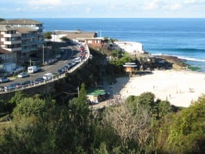

Here are a couple of photos from last year showing the site with the Club in rubble…

the Hakoah Club site seen from Hall Street, July 2011

the Hakoah Club site seen from O'Brien Street, July 2011
And here is a photo of the new building, Boheme, still incomplete, on the Hakoah Club site. I snapped this pic last week.

Boheme, still under construction, where the Hakoah Club stood
Bates Smart, the designers of Boheme, state on their website, that the Hakoah Club was “the social headquarters of Sydney’s Jewish community for 35 years.”
Yes, the club was certainly an important social space for many people in the Eastern Suburbs Jewish community – dare I suggest, particularly for the over 50s. It was a football (soccer) club and a social venue, but I don’t know how many people in Sydney’s Jewish community would agree with the statement that the Hakoah Club was “the social headquarters” of Sydney’s Jewish community.
Like most other ethnic groups, the Sydney Jewish community comprises a diverse group of people who chose to socialise in many different ways. The Hakoah Club was one venue in Sydney were such socialisation occurred.
In any case, I don’t really know what else I can say about this new megalith here, except that it will no doubt change the landscape and culture of the Hall Street I‘ve known for the past 35 years.
The Hakoah Club in Hall Street is now well and truly history.
Let’s see what commercial and real estate wonders Boheme will contribute to the Bondi community. I await in anticipation, and while I do, I am interested in reader’s comments….
]]>It was 120 years ago today that the original Bondi Aquarium was destroyed by a fire.
The Bondi Aquarium was a seaside attraction that opened in 1887 in the area described as Fletcher’s Glen. This area is what we now know as Tamarama. When the Bondi Aquarium opened, it attracted so many visitors that the tram line was extended to the end of Fletcher street to cope with the crowds.
The Aquarium provided entertainment such as merry-go-rounds, a Punch and Judy show, a shooting gallery, bowling, roller skating and tanks filled with various marine life including seals and a penguin. Dancing, fireworks and concerts were also regularly staged there.
On the 11th of July 1891, the Aquarium was destroyed by a fire, but only weeks later, it was re-built and continued to entertain Sydneysiders.
Here is a photo of the re-built aquarium. Photography by Henry King. Tyrrell Collection, Powerhouse Museum, Sydney.

The Bondi Aquarium shortly after it was re-built, circa 1891
In 1906 William Anderson bought the Bondi Aquarium and transformed this seaside attraction into Wonderland City, which, at the time, was apparently the largest open-air amusement park in the Southern Hemisphere. With a rollercoaster, an airship and thousands of coloured lights decorating the area, it must have been a pretty awesome attraction for its day. We’re talking 1906 remember!
But the popularity of Wonderland City apparently didn’t last for long. Residents objected to animal cruelty and there was growing concern that the airship was becoming a safety risk. There was also ongoing conflict between local swimmers and William Anderson regarding Anderson restricting access to the beach. The publicity of these incidents fuelled a drop in visitor attendance and in 1911, Wonderland City closed.
You can read more about Wonderland City here.
The NSW Government bought the area in 1920 and established Tamarama Park. The street in Tamarama, Wonderland Avenue, was obviously named after Wonderland City.
Here are “then and now” images showing a similar perspective of the site that Wonderland City occupied. The historical image was photographed by Henry King. Tyrrell Collection, Powerhouse Museum, Sydney. You can faintly see the top of the dome of the Aquarium in the top left hand corner of the picture below.

Wonderland City, Tamarama. circa 1907.

Tamarama Beach as seen from Wolaroi Crescent, July 2011.
I’d be interested to hear your thoughts on these seaside attractions that featured in the Bondi area over 100 years ago. Maybe you had a family member that had passed on their memories or stories about attending the Bondi Aquarium or Wonderland City? If so, please do share with us here.
]]>In the Bondi area alone (including Bondi Junction), there were at least half a dozen picture theatres in operation around the 1920s, 1930s.
There were also picture theatres in neighbouring suburbs like Rose Bay and Randwick. When the Wintergarden Theatre in Rose Bay went into the hands of developers I remember feeling quite disappointed at the defeat that locals faced regarding the planned demolition of the theatre. The bulldozers came in 1987. Down went the Wintergarden and up came apartments.
There was a cinema on the corner of Hall St, O’Brien St and Glenayr Avenue and there was also the Kings Cinema at Bondi Beach, corner of Roscoe St (where I once lived) and Campbell Parade. This image of the Kings Cinema, is reproduced here with kind permission of The Mitchell Library, State Library NSW.

THEN -Kings Cinema, Corner of Campbell Parade & Roscoe Street, Bondi Beach, circa 1930s
By 1970, most of these cinemas had closed, though there were still two or three operating in Bondi Junction. I’m not sure why the cinemas closed but I suspect it may have had something to do with the advent of television and perhaps offers from developers which,at the time, were maybe too reasonable to refuse.
I can remember going to see Mary Poppins in the Metro cinema in Bondi Junction as a very young child and as a young adolescent, I remember seeing a couple of flicks at the Star Cinema, also in Bondi Junction which closed in the mid-late 1970s.
I do remember the building which was formerly the King’s Cinema at Bondi Beach but by the time I was a young girl, this cinema was no longer in operation. However at one point in the late 1970s it was used to house The Creole Disco. Of course this site (and gorgeous art deco building) was bulldozed in the ealry 1980s to make way for what else – an apartment block known as The Breakers!

NOW - The Breakers, corner of Campbell Parade and Roscoe Street, Bondi Beach
Of course today Bondi has the wonderful Westfield mulitplex, pulp cinema, to replace the old picture theatres which clearly were a “waste of space” in some people’s eyes, or prime real estate that could be capitlised upon. So now, when we want an out of home community-based screen experience, the only cinema that Bondi has to offer (apart from the seasonal outdoor film events) is the mulitplex (Event) cinema in Bondi Junction – convenient for the “drive, park and eat” lifestyle which characterises so many of our lives today. And when we get that parking spot, chow down on some food from the food hall and then collect the tickets that we’d pre-booked online, we go and lap up a flick in a cinema without character, and without cultural history.
Does anyone remember going to any of the old picture theatres in the Bondi area? or does anyone have a story to tell about any of the old cinemas? or perhaps have any photos of these now long gone buildings?
]]>
Before Bondi became a BRAND…
– you could buy pies and cream puffs from the Flying Pieman at 3.30 in the morning
– there were 3 petrol stations on Campbell Parade
– the Astra was a grungy pub renowned for being somewhere you could always score
– you’d have ‘eyeballs’ at ‘the concrete’
– you could buy shawarmas at 3.00 in the morning in Hall Street
– there were only about 3 cafes you could hang out in… The Gelato Bar , Positive Vibrations and Cafe 729 and if you travelled to Rose Bay, there was Grandfather’s Moustache
– being a Bondi fashionista meant wearing a sloppy joe
– you could go to Valissis’ and play pinnies and grab a burger and a milkshake
– the 322 bus route – which went from Rose Bay wharf to Bondi Beach – still ran and terminated at South Bondi at the entrance to Queen Elizabeth Drive
– there was a strong local and transient population of Maoris living in Bondi
– you could drive up to the Dover Heights Bowling Club late at night and take in the lights of Bondi from the Heights
– there was “unauthorised” grafitti along the walls of the promenade, which said things like “Bondi Chicks Go Off”
– you could park in the middle of Campbell Parade FOR FREE between Lamrock Avenue and Beach Rd
I would love for more to be added to this list so please go for it…
]]>
The Bondi Pavilion in 2010
The Bondi Wave Music Course provides young musicians with intensive training in all aspects of music and working in a band – singing, theory, percussion, business skills, etc. So over the autumn-winter months of 1992, spent 5 full days a week living, breathing and practically eating music with the other “Wavers” at the Pav. It was one of the most creatively satisfying few months of my life, being taught by a diverse range of outstanding and inspiring musos.
Is there anyone else who has can share some memories of being a “Bondi Waver?”
In the early days of the course, the uprising of anti-democracy protests in Thailand became headline news here in Sydney. Thai people were protesting in Bangkok against the government of General Suchinda Kraprayoon (a non-democratic regime), demanding Democracy. The military response resulted in over 50 confirmed deaths and hundreds of injuries. One of the hotels that I’d stayed in while I was in Bangkok became a makeshift hospital for the injured and nearby, the Democracy Monument on boulevard Thanon Ratchadamnoen Klang was where many of the protestors were killed, since this was where they gathered to give voice to their pleas for Democracy. This calamity became known as Black May in Thailand.
I was pretty upset by what was happening in Thailand and at the same time was getting into songwriting from doing the Wave. So I ended up writing a song called The Monument and we publicly performed it on stage in the Pav at in the end of course show.
In the last few days the news of protests in Bangkok again has and the injuries and deaths that have resulted from the military crackdown have jogged this Bondi Wave memory for me. Is it a coincidence that the Black May event of 17th – 20th May 1992, happened exactly 18 years ago?
Is this now Black May #2?
So I’ve decided to dig out the original recording of The Monument and put it up here in memory of all the Thai people who have died or who have been injured protesting for democracy in Bangkok, both in these past few days and during Black May 1992. Hope you enjoy it.